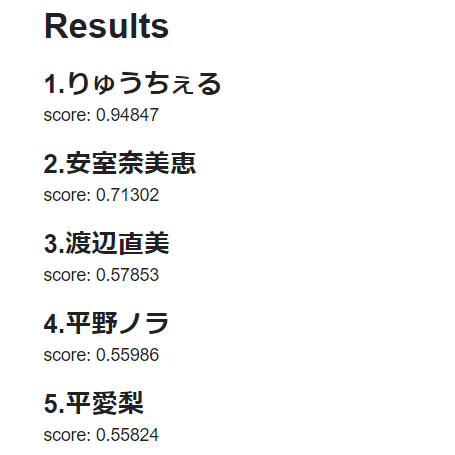
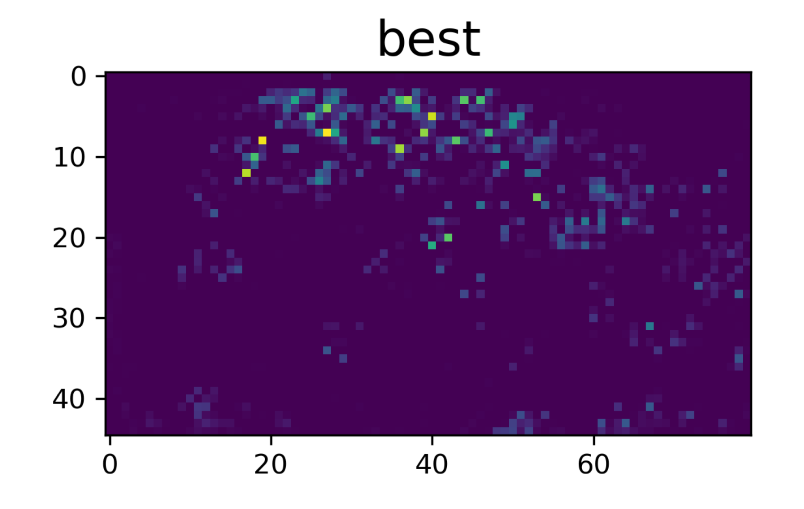
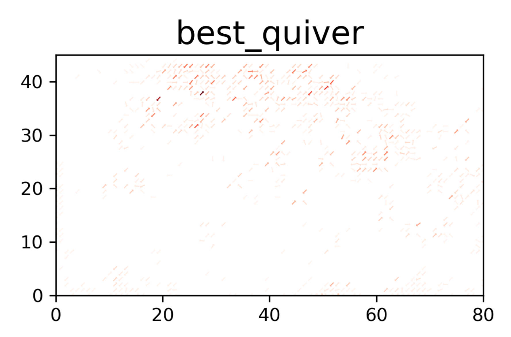
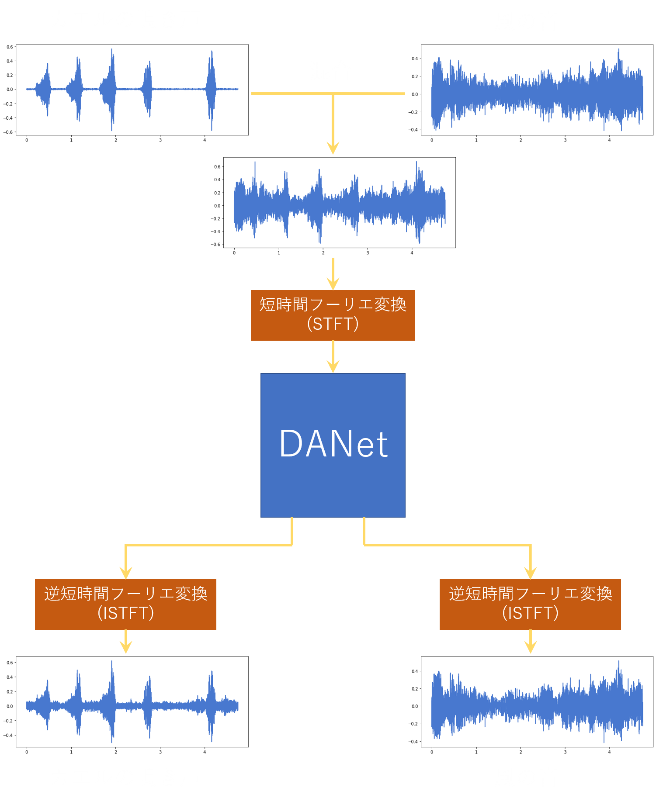

サークル活動
学期中の毎週の活動として輪読会を行っています。 輪読会では本を読んだり、中には各自が個人的に気になっていることについて発表したりと盛況しています。 今までの活動はこちらから。
Deep Learningについて
Deep Learningの基礎知識となる以下の事柄について会誌にまとめました。簡単に説明しているのでぜひ気軽にご覧になってください!
- 人工知能・機械学習・深層学習
- ニューラルネットワークと層構造
- 学習
- 損失関数
- 勾配法
- 誤差逆伝播法
実例
顔認識
あなたは誰に似ているのか!?
画像を機械に読み取らせ、機械が学習した70人のうち最も似ている順に
その名前を教えてくれます。※現在は公開を停止しています
デモ: Google Colab
解説: KYM384/FaceRecgnition_kaira


人流推定
人の流れを把握したい
新型コロナウイルス感染症により以前と比べ混雑する状況は減りましたが、
都市設計やイベントの運営者にとって人の流れを把握することは今だ大事に違いありません。
カメラ一つでそれを把握出来たら、コストも少なくてすみます。
今回はUSBカメラを用いてデモを行えます。
デモ: Google Colab
解説: hanebarla/62nf-kaira-peopleflow
元論文: Estimating
People Flows to
Better Count Them in Crowded Scenes


音声分離
Deep Attractor Network
DEEP ATTRACTOR NETWORK FOR SINGLE-MICROPHONE
SPEAKER SEPARATIONという論文で提案されている音声分離のモデルです。任意の種類の音声が混ざった入力音声を分離することができます。
KaiRAメンバーの一人がこのモデルの実装に取り組み、 ESC-50 という環境音データセットを用いて2種類の環境音を分離させるモデルの構築、学習を行いました。 Google Colaboratory 上で簡単に実行できます。また、実装したモデルについてまとめた Qiita記事 や実装コードを載せた Githubリポジトリ もあります。

例として、風の音とカエルの鳴き声の分離について示します。
テストデータでの推論結果(※音量が少し大きいので注意してください。)